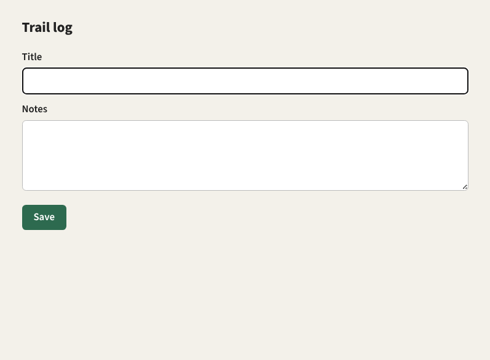
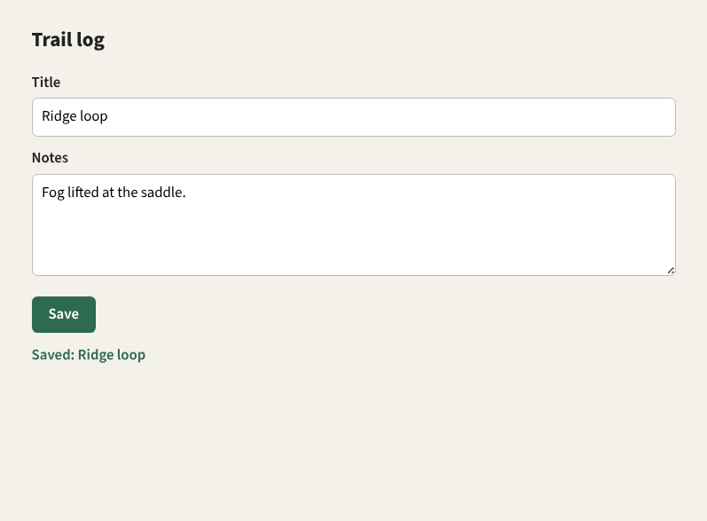

overview
Eyes and hands on a desktop.
Tendril lets an agent see and drive a computer the way a person does: find a window, take a screenshot, read its controls, then type, click and scroll. It is one stateless Rust binary for Linux, macOS, Windows and Android. There is no daemon and no session, and every command stands alone.
01 · listtendril listWindows, displays and cameras, with ids and capabilities.
02 · capture--window ID captureA screenshot, plus the scale to map it back.
03 · act--window ID run '…'Text, keys, clicks, drags and scrolls, serialised by a lock.
04 · verify--window ID captureLook again before the next step.
One turn of the loop
A form in a disposable X11 desktop, driven by one run call between two captures. These are the actual captures:


tendril listplatform: Linux / X11targets:- Display 1 screen 1920x1080+0+0 scale=1/1 capture=true, input=true - Window 0xe00003 Chromium-browser 797x587+125+94 scale=1/1 capture=true, input=true title="Trail log" app=Chromium-browser … and two more windows: the helper's browser and shelltendril --window 0xe00003 capture -o before.pngtendril --window 0xe00003 run 'send("Ridge loop"),Tab,send("Fog lifted at the saddle."),lclick(72,354),wait(300ms)' tendril --window 0xe00003 capture -o after.pngThe run's JSON envelope says what happened, including the parts a person would not see: it waited for no one in the lock queue, moved focus to the target to deliver input, and put focus and the pointer back afterwards.
"action_count": 5, "queue_position_at_join": 1, "wait_ms": 0, "stale_ms": 30000, "timeout_ms": 60000 }, "focus_transferred": true, "focus_restored": true, "pointer_restored": true Why it is built this way
- Stateless
- No daemon, session or hidden store. An agent can call it from anywhere, in parallel with others, and a crash leaves nothing behind. Where a stored target would help,
tendril aliaswrites a shell function instead. - Typed, everywhere
- The command line and the MCP server share one typed surface and the same JSON envelopes, so an agent gets identical results either way.
- Careful with a shared desktop
- Input is serialised by a host-wide lock, focus is restored after each run, and inputs that look like commands are refused rather than typed into the focused window.
- Honest about platforms
- Where a backend is missing, results say so: a probe-only audio capture, a skipped focus restore or a fallback element tree is reported in the envelope, not hidden.
- Anywhere
- The same invocation runs on a remote host over SSH, on the Windows host from WSL, or against an Android phone over ADB.
Where to go
- GuideList, capture and coordinates, semantic elements, the run language, focus, audio and aliases.
- PlatformsX11 and Wayland, macOS, Windows, Android, SSH and WSL, and a disposable headless desktop.
- AgentsMCP tools, envelopes and errors, the execution lock and the safety guards.
- ReferenceCommands and flags, every run action, configuration and environment.
- APIThe Rust API documentation for the workspace.